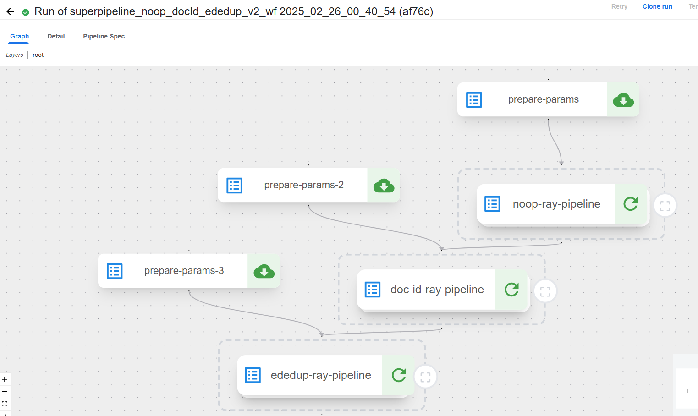
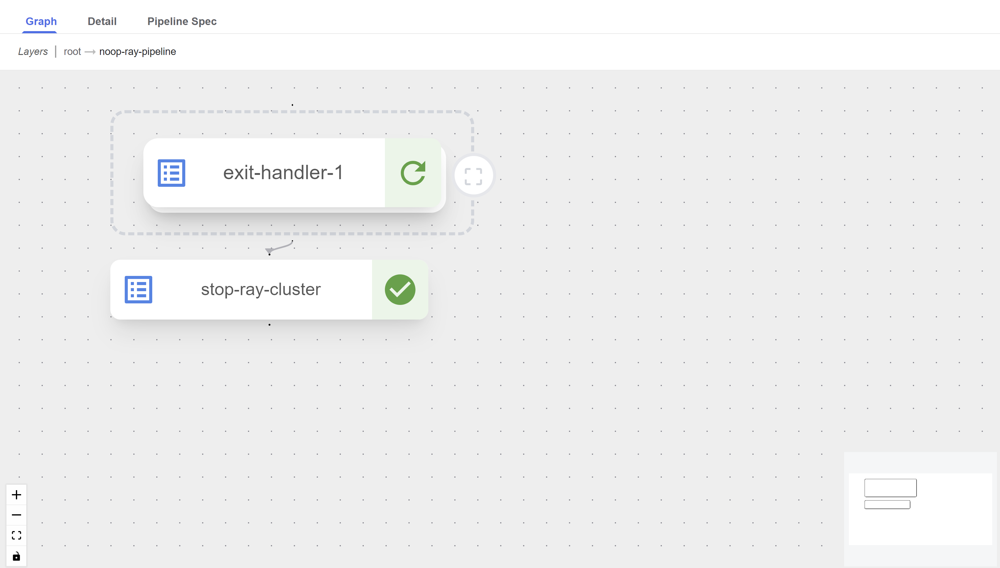
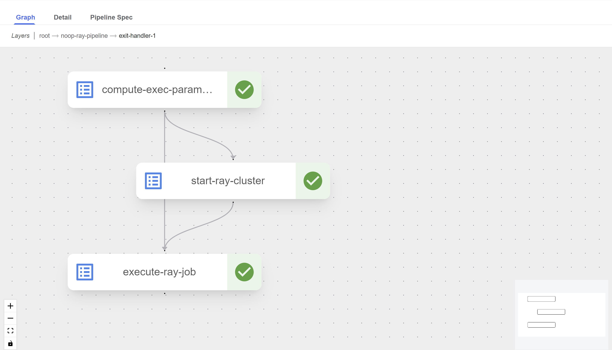
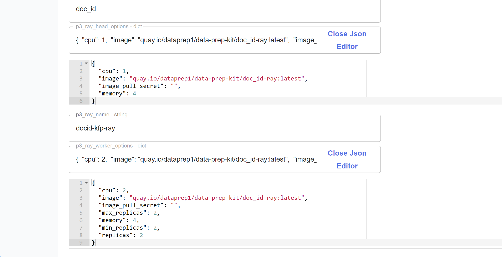

Chaining transforms using KFP V2
As in super pipelines of KFP v1, we want to offer an option of running a series of transforms one after the other on the data. But, in KFP v2 we can make it easier to chain transforms using the nested pipelines that KFP v2 offers.
One example of chaining noop, document id and ededup transforms can be found here. When running this pipeline it appears as hierarchical graph with three nested pipelines, one for each transform as shown in the following screenshots.
root Layer

root -> noop-ray-pipeline Layer

root -> noop-ray-pipeline -> exit-handler-1 Layer

Another useful feature of the KFP v2 is the Json editor for the dict type input parameter as shown here:

Main differences from KFP v1 superpipeline:
- Uploading the transform pipelines before running the superpipeline is not required. When compiling the superpipeline code, it automatically retrieves the latest versions of the transforms.
To enable this, the path to the transform pipelines code must be included in
PYTHONPATHbefore compiling the superpipeline. In this example, the Makefile ensuresPYTHONPATHis updated to include the transforms directory. Additionally, if the pipeline references modules in subdirectories (such as in the ededup case, where it refers to a module in thesrcsubdirectory) these subdirectories must also be added toPYTHONPATH. - It creates just one run that includes all the nested transfroms and their sub-tasks.
- No need for additional component as
executeSubWorkflowComponent.yaml. All the implementation in the same pipeline file. - In superpipelines of KFP v1 there exists an option to override the common parameters with specific values for each one of the transforms. This option is missing in the KFP v2 superpipelines.
- In kfp V2 pipelines the user is requested to insert a unique string for the ray cluster created at run creation time (called
ray_run_id_KFPv2). This is because in KFPv2dsl.RUN_ID_PLACEHOLDERis deprecated and cannot be used since SDK 2.5.0 and we cannot generate a unique string at run-time, see https://github.com/kubeflow/pipelines/issues/10187.
How to compile the superpipeline
Please note that in KFP v2, there is an issue where pipeline input parameters with default values of Falseor an empty
string do not appear in the GUI, causing them to be required despite having default values. As
a workaround for empty string fields, inserting a single space can be used. This issue has been resolved in newer KFP versions.